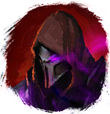

Открыть в интерактивной вики →
| Уровень | 150 |
|---|---|
| Сила (PvE) | норм. 11 047 / тяжел. 17 411 |
| Аспект | Farao |
| Здоровье | 34 000 |
| Мана | 15 000 |
| Выносливость | 15 000 |
Локация
- Корабль Уторского Адмирала
- Корабль Адмирала
Дроп


Описание

Статистика
 |  |
Призван как I
| Уровень: 150 | Уровень: 190 | ||||
Здоровье: 40 000 Мана: 15 000 Выносливость: 15 000 | Здоровье: 59 000 Мана: 15 000 Выносливость: 15 000 |
Призван как II
| Уровень: 160 | Уровень: 200 | ||||
Здоровье: 49 000 Мана: 15 000 Выносливость: 15 000 | Здоровье: 73 000 Мана: 15 000 Выносливость: 15 000 |
Призван как III
| Уровень: 170 | Уровень: 210 | ||||
Здоровье: 58 000 Мана: 15 000 Выносливость: 15 000 | Здоровье: 87 000 Мана: 15 000 Выносливость: 15 000 |
Умения
 Оглушение Оглушение — поджог
Оглушение Оглушение — поджог Метеорит Метеорит — огненный шар, теневой удар
Метеорит Метеорит — огненный шар, теневой удар Инкантация Инкантация — контроль дыхания, удар в живот, отупление, булавка в глаз, укол куклы, чувствительность к огню
Инкантация Инкантация — контроль дыхания, удар в живот, отупление, булавка в глаз, укол куклы, чувствительность к огню